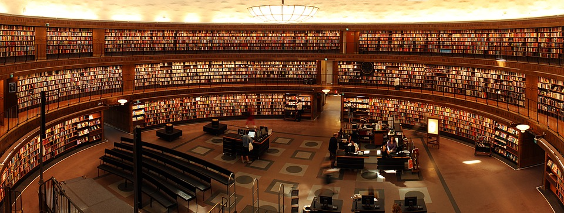
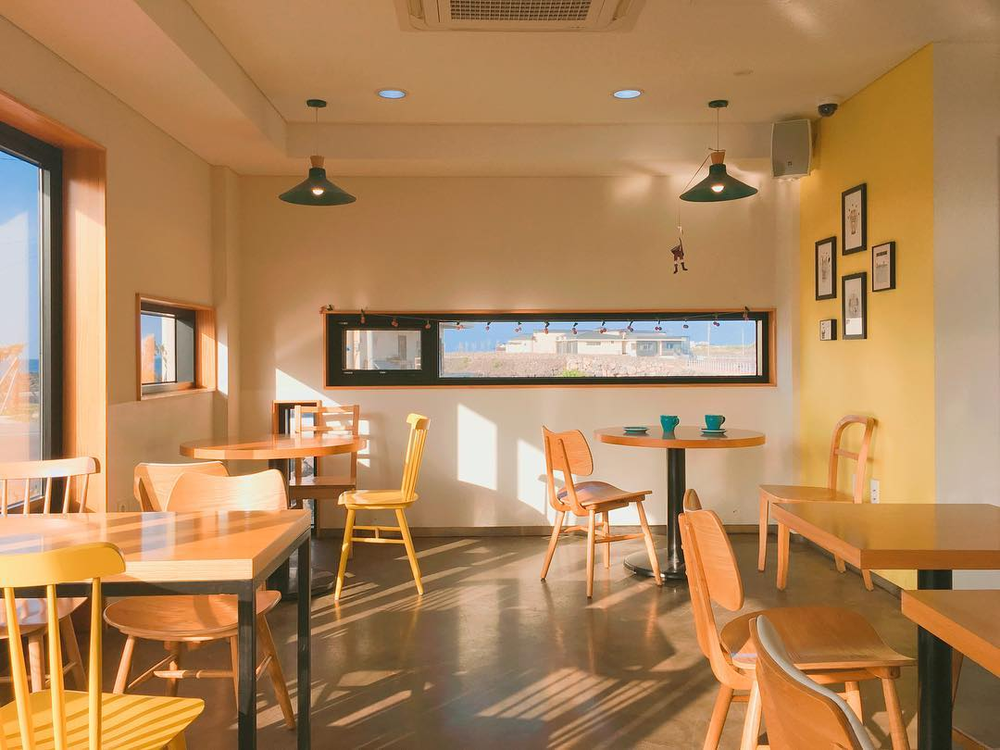

여러분들은 어디서
공부하시나요?
저는 장소 마다의 분위기를 매우 중요시 여기는 학생입니다.
그리고 저는 저뿐만 아니라 많은 사람들이 분위기를 신경쓰고 중요시 여긴다고 생각합니다.

도서관에서 공부하시나요
도서관은 매우 조용합니다. 쓱쓱 책을 넘기는 소리가 들리며 발걸음마저 조심하게 되는 공간이죠. 자신의 책상에 앉아 공부를 하다보면 어느 순간 집중을 하여 피곤해졌다는 것을 깨닫게 되곤 합니다.

카페는 어떤가요
은은한 커피향이 풍기며 작은 수다소리가 들려오는 공간입니다.
커피를 마시는 공간일지라도 당장 학교 앞 스타벅스를 가면 공부하는 사람을 찾는 것이 어려운 일이 아닙니다.

이 두 공간에는 공통점이 있을까요
조금 생각했을때는 완전 다른 공간이라고 생각되기도 합니다.
도서관은 매우 조용하다면 카페는 그렇지 않으니까요
하지만 이 공간에는 공통점이 있고 그것이 공부할 분위기를 만들어냅니다

사소하지만 큰 공통점
자신만의 자리가 있습니다.
도서관은 당연하지만 카페는 주문하는 곳이 나누어저 있어 자신만의 공간을 구분해줍니다.
책과 노트북을 올려둘 책상과 있습니다.
주변 소음은 오히려 자신의 것에 집중할 수 있도록 만들고
두 공간은 모두 특유의 향을 가지고 있습니다.


이러한 웹을
만들고 싶습니다.
저는 분위기의 힘을 믿습니다.
그 공간이 그렇게 느껴지는 것은 우연이 아니고 어떠한 요소들의 상호작용 때문이라 생각합니다.
그렇기에 이를 웹에 접목해 사용자에게 친근하면서도 새로운 경험을 주는
인터넷상 공간을 만들고 싶습니다.
중앙대학교 멋쟁이사자처럼 7기
임재확 - evyfjae@gmail.com
© Untitled. Design: HTML5 UP.